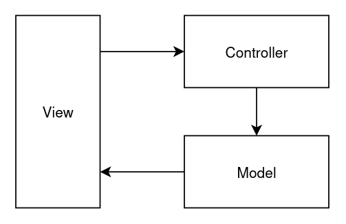

Padrões de projetos são soluções típicas para problemas comuns. Refactoring.guru
Neste projeto, utilizarei dois padrões de projetos muito conhecidos:
- DAO
- MVC
Data Access Object - DAO
Um padrão que visa abstrair o acesso aos dados. Seu objetivo é possibilitar a mudança da fonte de dados, sem impactar na lógica da aplicação.
Desta forma, é composto por uma camada, geralmente uma interface que define os métodos de acesso aos dados. A implementação desses métodos, poderá mudar conforma a fonte de dados utilizada.
Exemplo:
public interface ILivroDAO {
boolean inserir(Livro livro);
boolean deletar(String isbn);
List<Livro> listar();
Livro buscarPorISBN(String isbn);
boolean atualizar(Livro livro);
}
Aqui definimos os métodos de acesso, ou seja, os métodos que estão sendo utilizados pelas regras de negócio da aplicação para recuperar os dados.
A chamada a esses métodos na lógica da aplicação não deveria mudar. Porém, a implementação desses métodos pode mudar a medida que trabalhamos com uma fonte de dados diferente.
Model View Controller - MVC
O MVC é um padrão de projeto que visa separar uma aplicação em três camadas distintas:
- Modelo: representa os dados da aplicação
- View: apresenta os dados da aplicação
- Controller: representa a ligação entre a view, recebendo os dados da interface do programa, direciona o fluxo das operações, acessando os dados e disponibilizando para as views.
A figura abaixo demonstra uma representação desse padrão:

O projeto MiniMVC
O projeto Mini MVC é um CRUD que utiliza desses dois padrões em sua implementação.